Registering Credentials |
| 1. |
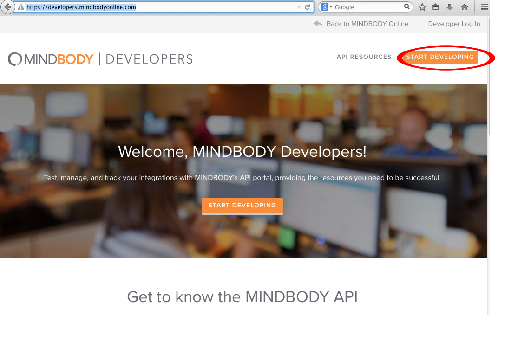 |
Go to the MindBody developer site. Click on "Start Developing". |
| 2. |
 |
Fill in your account information. Remember your business name, email, and password, as you will need these later. |
| 3. |
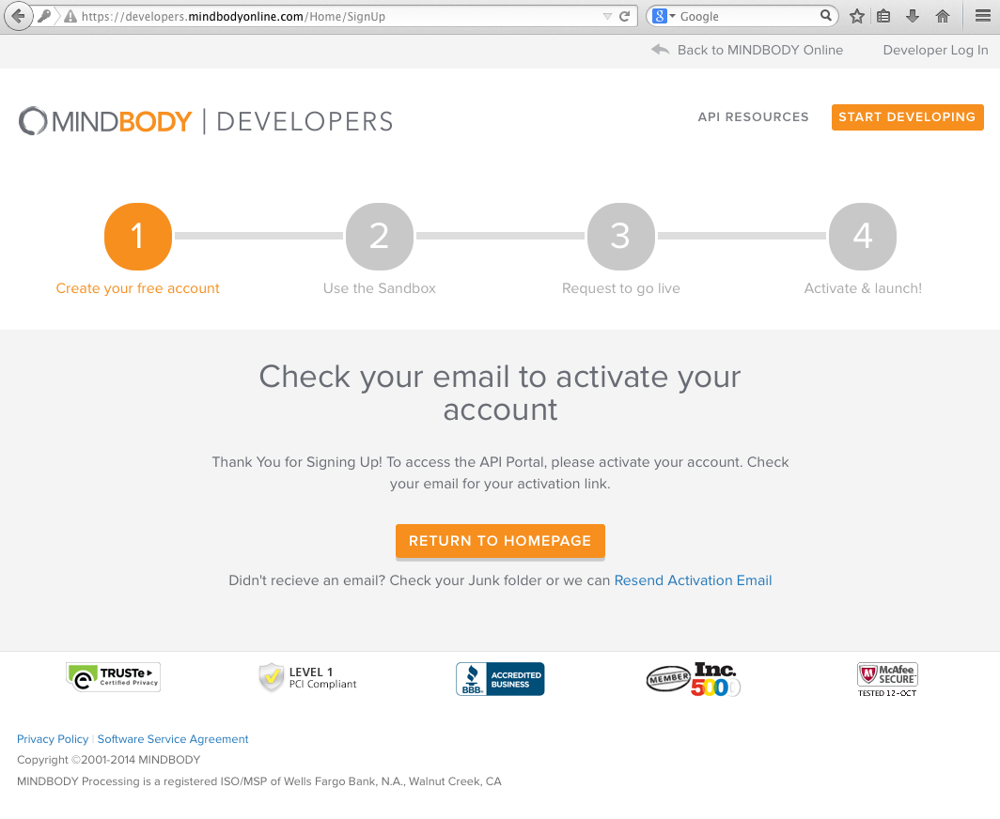 |
You will see this page directing you to your email. |
| 4. |
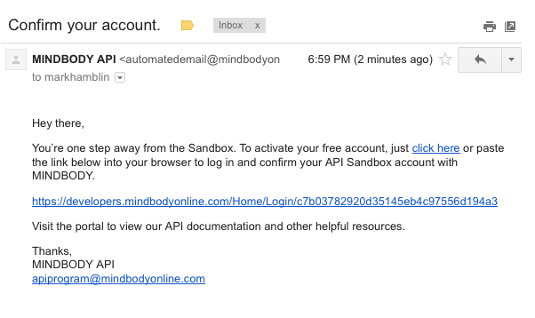 |
You should receive an email similar to this |
| 5. |
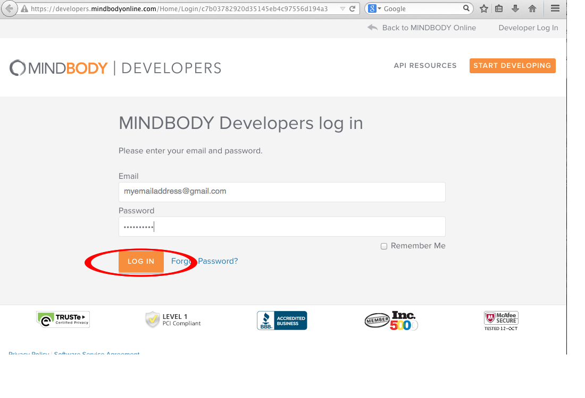 |
Follow the link to a page like this. Use the email and password you used before. |
| 6. |
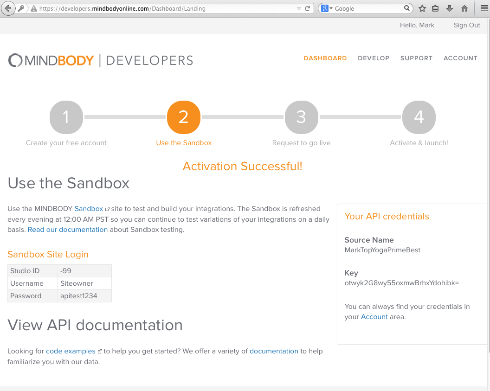 |
You will land at the following page, which displays your business name with a key. You will use these values together as the API login credentials in the "PP PCA Mindbody Plugin" settings page in WordPress. Note that you will also need to request to MindBody to go live before you may start using these credentials on your live site. |
Plugins: |
| 1. |
|
To install plugins, open the plugins panel, click "Add New", enter Admin Menu Editor
Custom PCA Plugin
- Go to page
- Download ZIP
- Go to admin/plugins page...Add New...Upload...
Repeat for Members, Posts in Page?, Others???
|
| 2. |
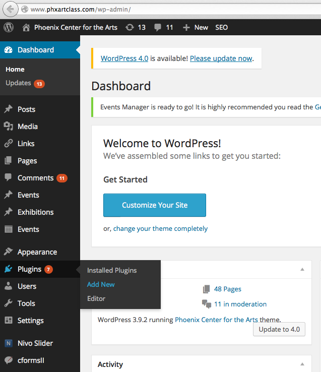 |
Select Plugins and Add New from the left-hand menu. |
| 3. |
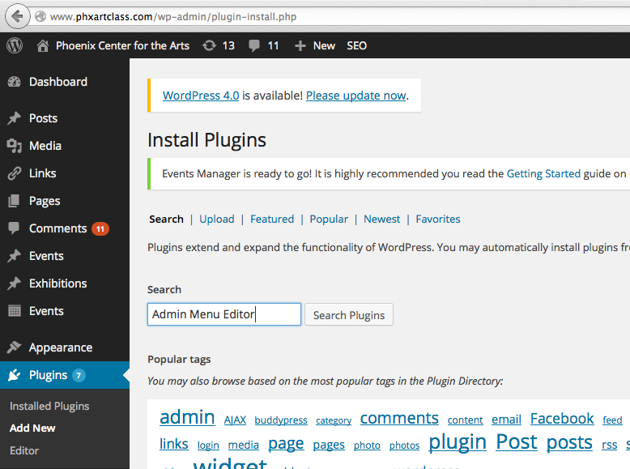 |
Enter "Admin Menu Editor" and press "Search Plugins". Repeat for the Members plugin. |
| 4. |
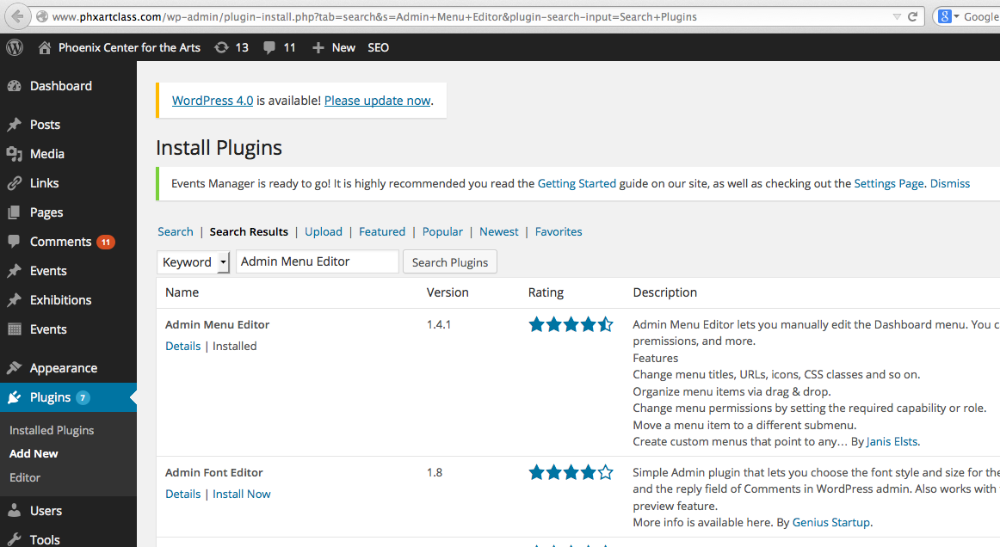 |
You will now see a screen like this. In this example, the Admin Menu Editor plugin is already installed, but if it were not you would see an option to "Install Now". |
| 5. |
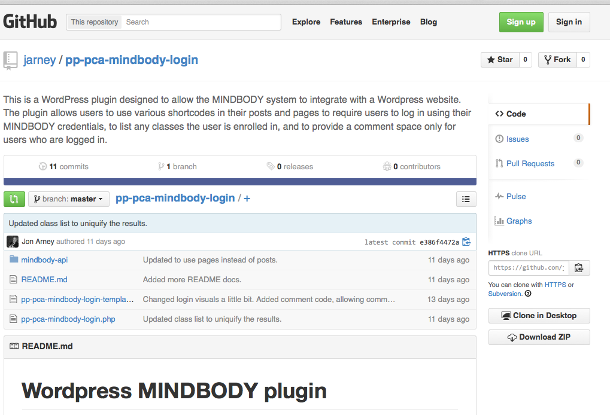 |
After you have installed all the standard plugins, you need to install the custom pp-pca-mindbody-login plugin. First, go to Custom PCA Plugin and press the Download ZIP button. |
| 6. |
|
Go back to the Install Plugins page from step 3 and select the Upload option. |
| 7. |
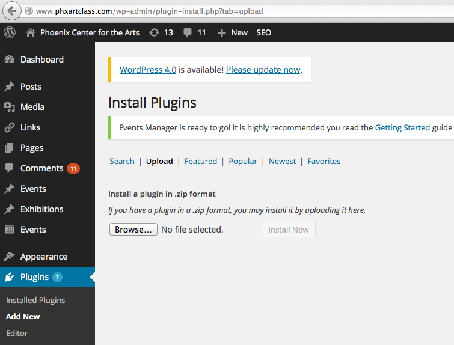 |
Press the Browse button and find the file you saved in step 5. |
Settings: |
| 1. |
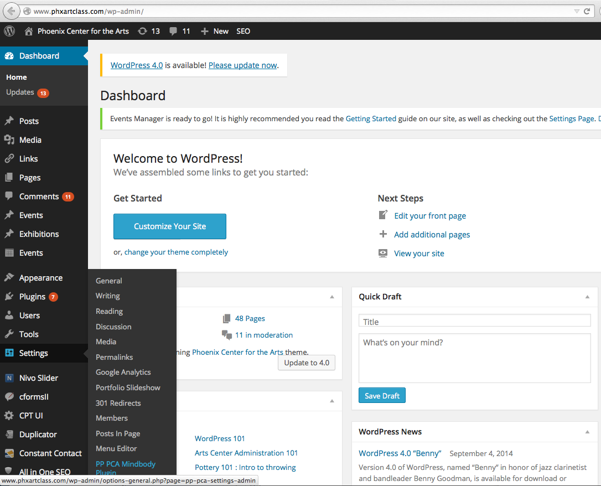 |
Go to the PP PCA Mindbody Plugin Settings page. |
| 2. |
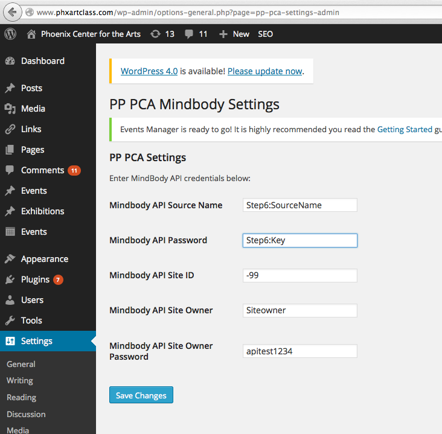 |
Settings page — Describe how/where to fill in API creds
Mindbody API Source Name = Source Name from step 6 above
Mindbody API Password = Key for step 6 above
Mindbody API Site ID = Studio ID above (for sandbox, you will receive a new Studio ID when you go live)
Mindbody API Site Owner = Username above (for sandbox, again you will set up a real name when you go live)
Mindbody API Site Owner Password = Password above (see note as above)
|
Creating the "Course Catalog" page |
|
1.
|
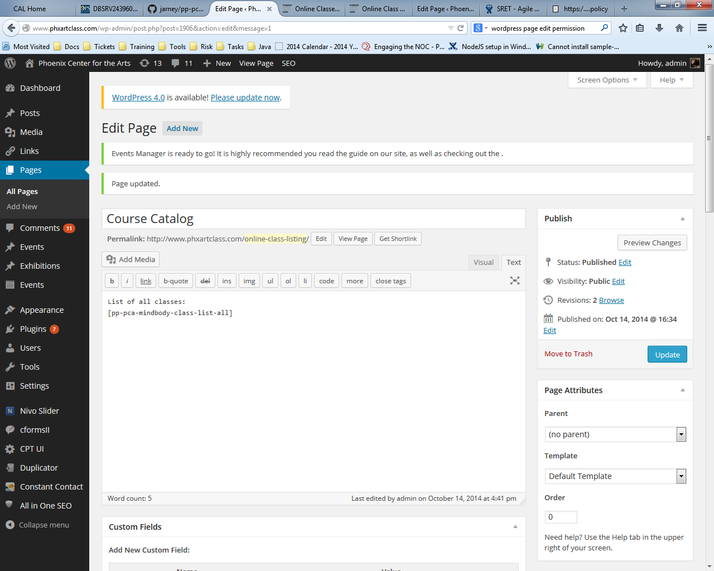 |
The course catalog page is a special page used by teachers and administrators to help associate the classes as configured in the MINDBODY system with the pages in the WordPress website. This special page should be accessible only to teachers and administrators who need to know this mapping in order to ensure that the class content on the website is restricted to the appropriate users. This page should be created and given the title “Course Catalog”. The URL to this page should be well-known to administrators and teachers, however, it should not be linked directly to the website for external users. The page only needs to contain the specific short-code “[pp-pca-mindbody-class-list-all]” This will create a table from the MINDBODY system containing the list of classes set up in that system as well as the class IDs associated with them.
|
|
2.
|
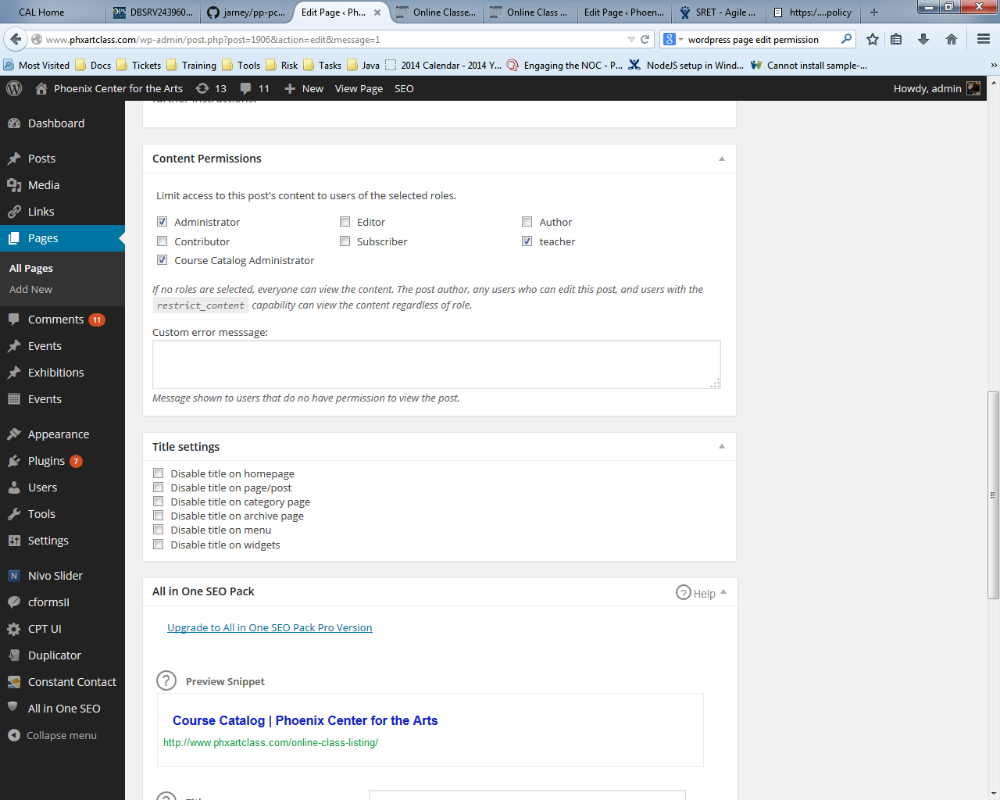 |
The page content should be restricted only to the specific roles that need to be able to see this information. Other users will not be able to access this page.
|
How to create class pages |
|
1. Introduction
|
|
This document describes the steps necessary to create an online class using the WordPress frameworks set up for Phoenix Center for the Arts. The main requirements for the online-class pages are that they:
- Are accessible only to students who have registered for that specific class.
- Allow students to post comments and questions.
- Have content authored by an instructor and approved and published by a course administrator.
We encourage you to build several classes in the test site and experiment with different ways to structure the pages so that you can arrive at a structure that works best for the organization. This document should help by providing an initial configuration which can be used as a template for later expansions.
The next sections of this document go through the process of creating a new page associated with class content and configuring it appropriately to meet these requirements. The first step is to create the class in the MINDBODY system. Once created, the ID of the class must be noted down so that the page created for that class can be used to restrict content to only those users who have registered for that class. Next, the teacher responsible for the course-content should log into WordPress and create a page corresponding to that class. This page will serve as the landing page for students registered for that class. It is important that this page be created by the person responsible for the content because the creator of the page will have permission to edit the page and will be the primary person to maintain the content.
|
|
2. Create new class in MINDBODY
|
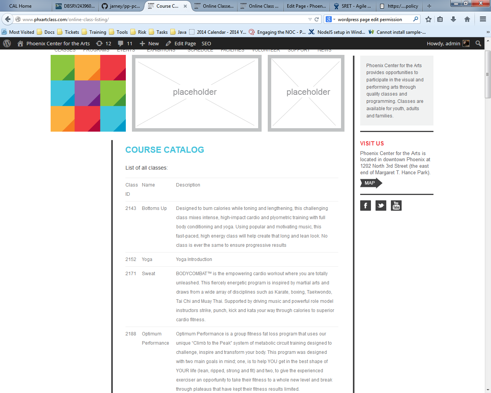 |
The first step in creating a new class is to configure the class in the MINDBODY system. This is done through the MINDBODY interface in much the same was as has always been done. No specific settings in MINDBODY are required. Once the class is created, the specific ID for that class must be obtained. This can be done by referring to the page entitled
“Online Class Listing”.
Take note of the “ID” listed for the new class so that it can be used to associate to the corresponding WoddPress page in later steps.
|
|
|
3. Teacher creates a new page in WordPress
|
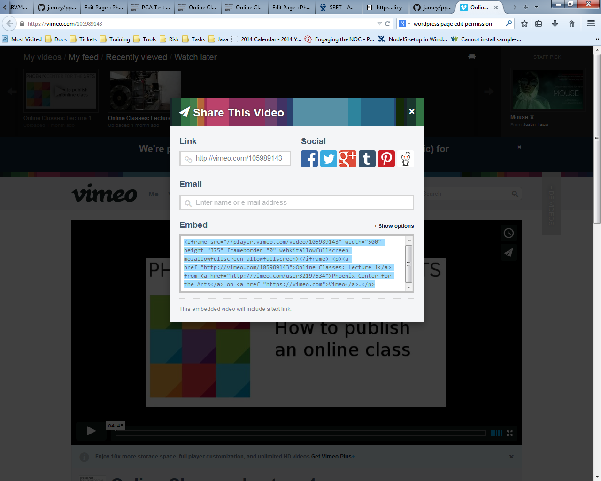 |
The teacher responsible for running this class should now create a new page for this class in the WordPress system. The teacher should create this page so that they can edit the class content later during the semester if necessary. In addition, the teacher will be primarily responsible for making sure that the course content is appropriate for the class. In addition to the main content itself, there are a few key things that need to be a part of the associated page in order to ensure that it operates correctly for students. In particular, in order to restrict the class content to only the appropriate students, the following two short-codes should appear at the top of the class page:
[pp-pca-mindbody-login]
[pp-pca-mindbody-class id=2215]
And at the bottom of the class page, these short-codes must appear.
[pp-pca-mindbody-comment]
[/pp-pca-mindbody-class]
The first sets up this page to require that the person viewing the page is a valid user in the MINDBODY system. The second ensures that the user is registered for the MINDBODY class “2215”. The class ID used here is the one established in the earlier step for creating the class in the MINDBODY system. The third allows students to post comments on the page, allowing the students a way to ask questions. The final closes the section that is accessible only to students and is a required ending tag.
Apart from those restrictions, the class content itself can be built by the instructor using videos embedded in the page, hyperlinks to documents, or any other type of material the instructor feels is appropriate for the class.
Specifically for video content, we have provided a menu system which allows those videos to be embedded in the page and accessed while minimizing the amount of page space taken. In order to make use of this, first obtain the “embed” link from Vimeo or other video sharing service:
Each video will have its own “embed” tags. These can be combined in the structure as shown below to provide students a convenient way to choose between the various videos. This is especially useful when a limited amount of page space is devoted to videos and the remainder of the space is devoted to supplemental course materials.
<div id=btns></div>
<div id=panes>
<div id=wk1 class=wks>
Embed tags for video 1 go here...
</div>
<div id=wk2 class=wks>
Embed tags for video 2 go here...
</div>
<div id=wk3 class=wks>
Embed tags for video 3 go here...
</div>
<div id=wk4 class=wks>
Embed tags for video 4 go here...
</div>
[pp-pca-mindbody-content-menu]
Note that each embed link is surrounded by its own “div” tag inside the “panes” section. Note also that the shortcode [pp-pca-mindbody-content-menu] provides the JavaScript necessary to display the menu and choose the videos or other content.
|
|
Shortcode reference Guide |
|
|
A more full description of the short-codes provided for
MINDBODY integration can be found in the
documentation for the PP-PCA Mindbody plugin
|